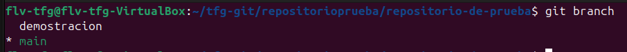
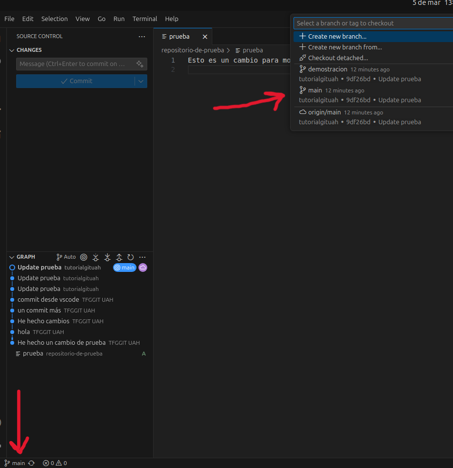

git branchSe utiliza para crear, listar y eliminar ramas en tu repositorio. Las ramas te permiten trabajar en diferentes características o versiones de tu proyecto de forma independiente.

Dentro de la carpeta ejecutamos lo siguiente:
git branch
Esto nos mostrará todas las ramas locales del repositorio y marcará con un asterisco (*) la rama actual.Para cambiar a otra rama, usamos el comando git checkout seguido del nombre de la rama:
git checkout (nombre de la rama)
Para poder subir una rama que hemos creado en local, debemos escribir el siguiente comando:git push -u origin (nombre de la rama)
Esto subirá la rama al repositorio remoto y establecerá un seguimiento entre la rama local y la remota.Para crear una nueva rama:
git branch (nombre de la rama)
Para eliminar una rama:git branch -d (nombre de la rama)
Para ver todas las ramas incluyendo las remotas:git branch -a

En la ventana de control de git dentro de vscode, puedes ver las ramas en la parte inferior izquierda. Haz click en el nombre de la rama actual para cambiar a otra rama o crear una nueva. También puedes ver todas las ramas disponibles.